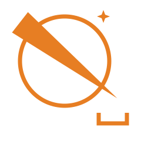
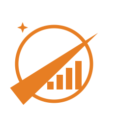

SC ExtractorBasetool-Logo — Zeichen · Lockup · Extractor · Favicon


SC Extractorassets/basetool-logo(.‑white).svg · basetool-extractor-logo(.‑white).svg · basetool-favicon.svg · PNG: favicon 16/32/64, appicon 512, extractor-icon 512 — Entwurf: proposals/basetool-logo-entwurf.html